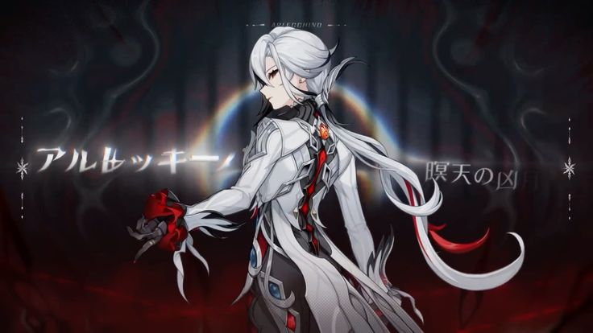

Arlecchino The Harbinger
"The Knave," Fourth of the Fatui Harbingers. A poised, ruthless diplomat.
To the children in the House of the Hearth, she is their feared yet dependable "Father."
Weapon Type: Polearm
Artifacts: Fragment of Harmonic Whimsy
Constellation: Ignis Purgatorius
